Cabane des becs de Bosson depuis Bendolla, par la Tsarva
Type : aller simple
Description de l'itinéraire : Bendolla - la Tsarva - col des becs de Bosson - cabane des becs de Bosson
Distance : 6 km
Dénivelé positif : 900 m
Point le plus bas : 2128 m
Point le plus haut : 2985 m
Cotation en l'absence de neige : T2
Intérêt : 2/5
Date : 7/7/2024
Photos :
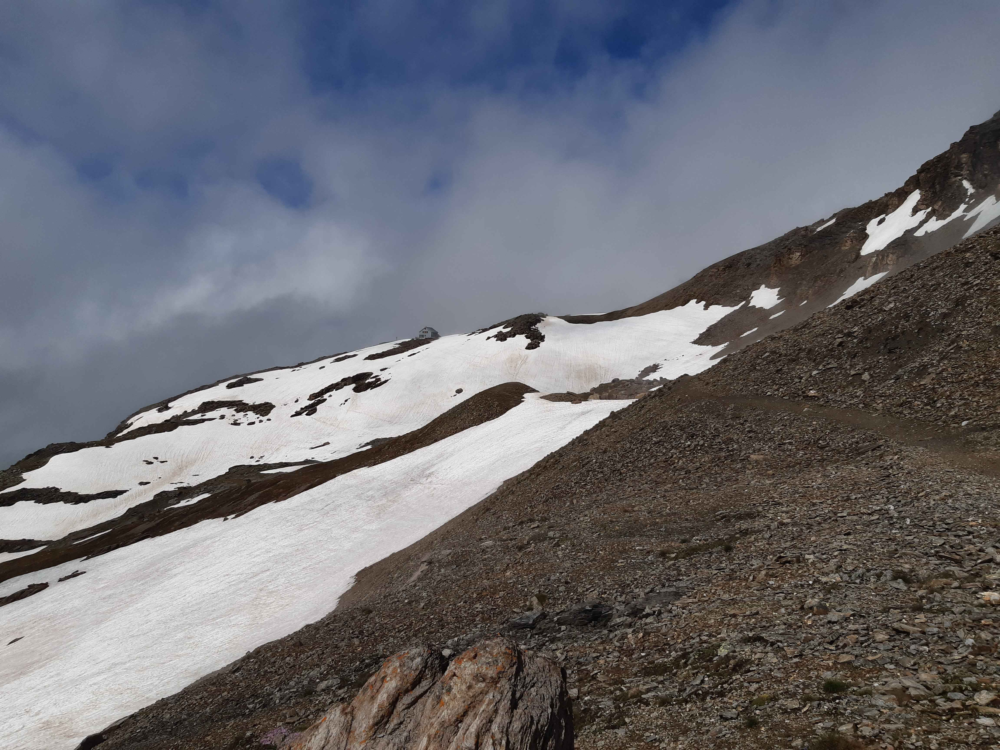 La cabane des becs de Bosson vue depuis le col des becs de Bosson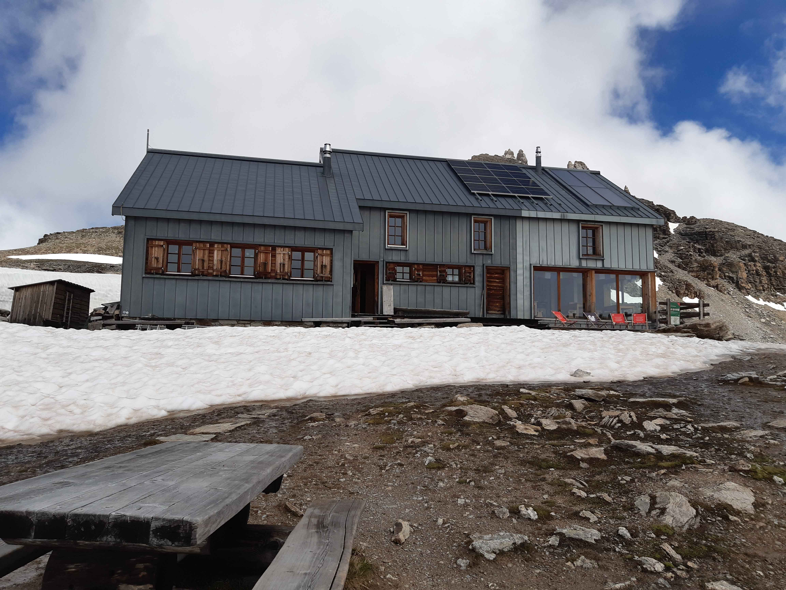 La cabane des becs de Bosson
Cabane des becs de Bosson depuis Grimentz, par le pas de Lona
Type : aller simple
Description de l'itinéraire : Grimentz - Bendolla - les Crêts - Lona - pas de Lona - cabane des becs de Bosson
Distance : 9 km
Dénivelé positif : 1500 m
Point le plus bas : 1580 m
Point le plus haut : 2985 m
Cotation en l'absence de neige : T3
Intérêt : 4/5
Date : 25/7/2024 et 3/8/2024 (dans l'autre sens et seulement jusqu'à Bendolla)
Photos :
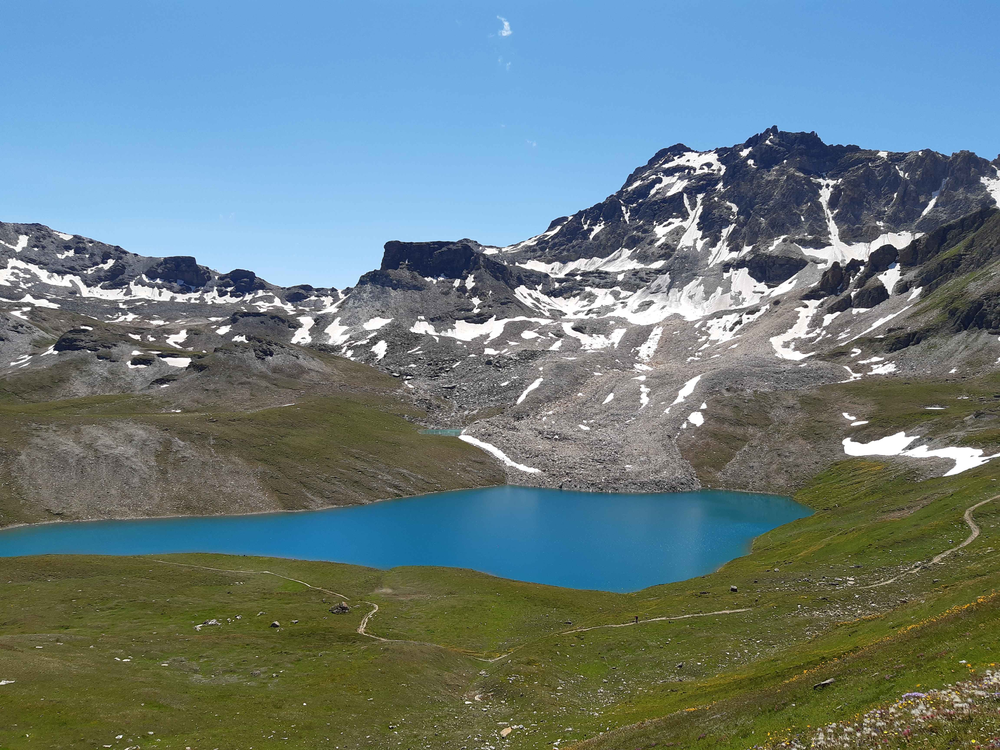 Le lac de Lona et le Sasseneire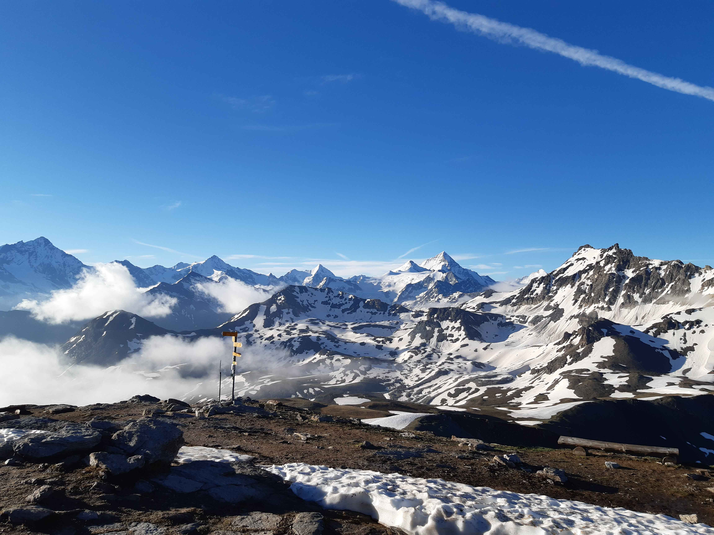 Vue depuis la cabane des becs de Bosson
Becs de Bosson
Type : aller-retour
Description de l'itinéraire : cabane des becs de Bosson - col des becs de Bosson - bec de Bosson occidental
Distance : 3 km
Dénivelé positif : 300 m
Point le plus bas : 2946 m
Point le plus haut : 3146 m
Cotation en l'absence de neige : T4
Intérêt : 5/5
Date : Entre autes, 13/7/2024 et 25/7/2024
Photos :
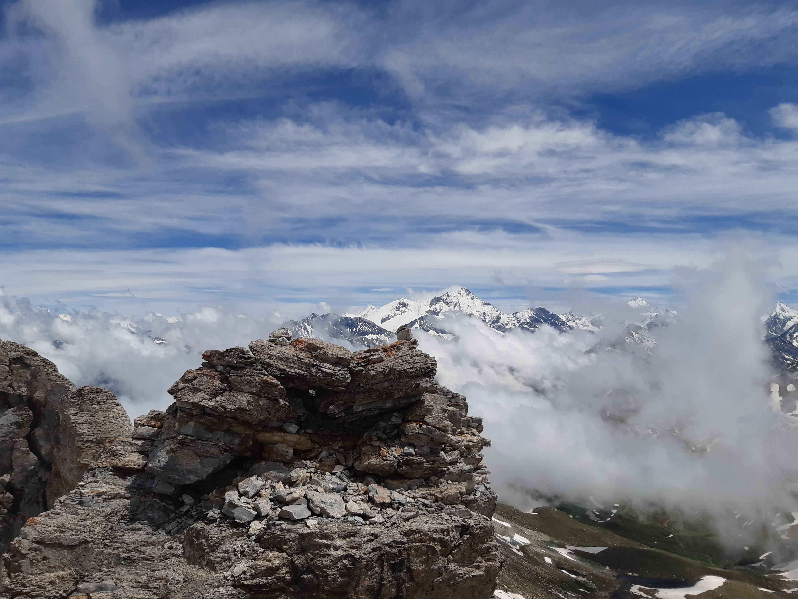 Les deux autres becs de Bosson et le Weisshorn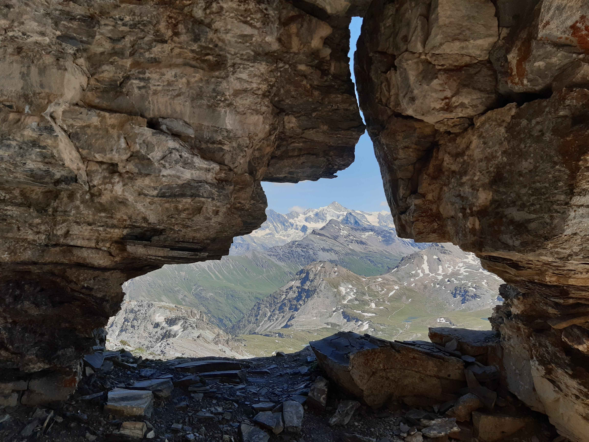 L'arche de pierre avec le Weisshorn en arrière-plan
Pointe de la Tsevalire
Type : aller-retour
Description de l'itinéraire : cabane des becs de Bosson - col de la Tsevalire - pointe de la Tsevalire
Distance : 1 km
Dénivelé positif : 100 m
Point le plus bas : 2946 m
Point le plus haut : 3024 m
Cotation en l'absence de neige : T3
Intérêt : 3/5
Date : Juillet 2024
Photos : aucune
Roc d'Orzival
Type : aller-retour
Description de l'itinéraire : cabane des becs de Bosson - col des becs de Bosson - la Tsarva - roc d'Orzival
Distance : 11 km
Dénivelé positif : 800 m
Point le plus bas : 2587 m
Point le plus haut : 2985 m
Cotation en l'absence de neige : T2
Intérêt : 2/5
Date : 16/7/2024
Photos : aucune
Lac du Louché
Type : aller-retour
Description de l'itinéraire : cabane des becs de Bosson - col de la Tsevalire - lac du Louché
Distance : 6 km
Dénivelé positif : 400 m
Point le plus bas : 2567 m
Point le plus haut : 2985 m
Cotation en l'absence de neige : T2
Intérêt : 3/5
Date : Juillet 2024
Photos :
Le lac du Louché et les becs de Bosson
L'A Vieille
Type : boucle
Description de l'itinéraire : cabane des becs de Bosson - col de la Tsevalire - l'A Vieille - pas de Lona
Distance : 7 km
Dénivelé positif : 700 m
Point le plus bas : 2370 m
Point le plus haut : 2985 m
Cotation en l'absence de neige : T3
Intérêt : 3/5
Date : Juillet 2024
Photos : aucune
Sasseneire
Type : aller-retour
Description de l'itinéraire : cabane des becs de Bosson - pas de Lona - basset de Lona - alpage de Torrent - col de Torrent - Sasseneire
Distance : 24 km
Dénivelé positif : 1800 m
Point le plus bas : 2482 m
Point le plus haut : 3254 m
Cotation en l'absence de neige : T4
Intérêt : 5/5
Date : 15/7/2024
Photos :
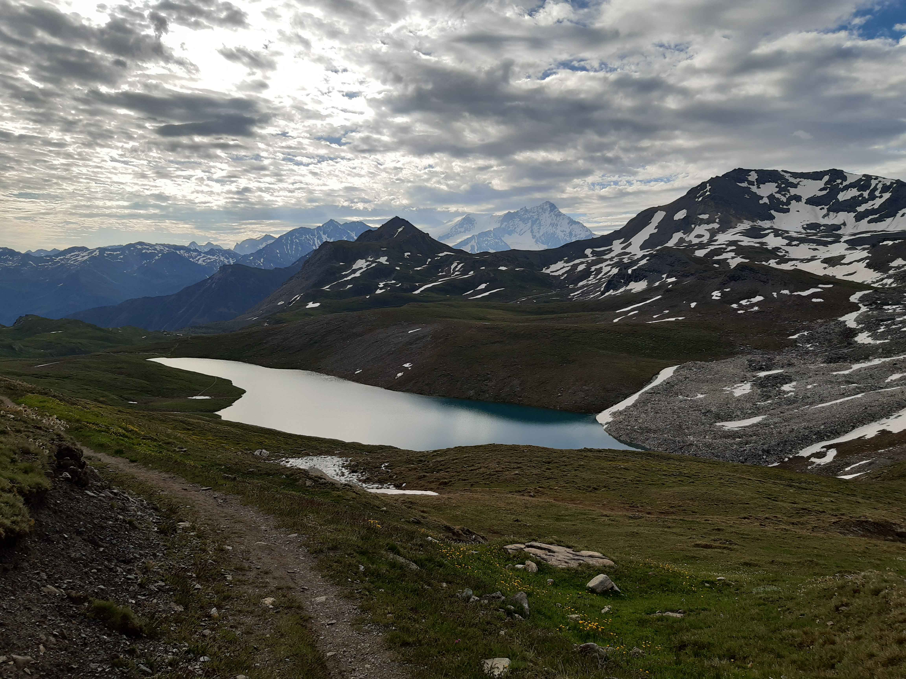 Le lac de Lona et le Weisshorn en arrière-plan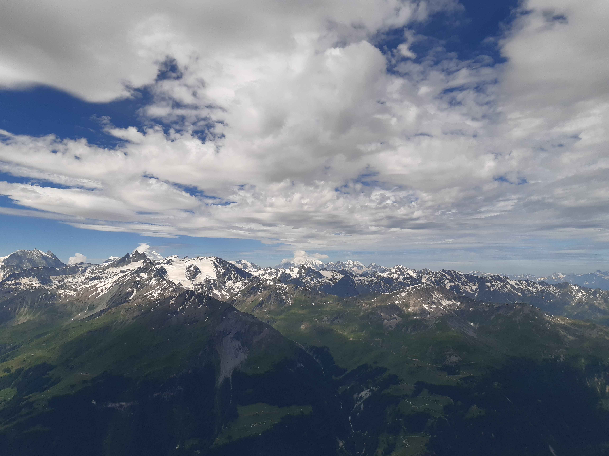 Vue du sommet, côté Ouest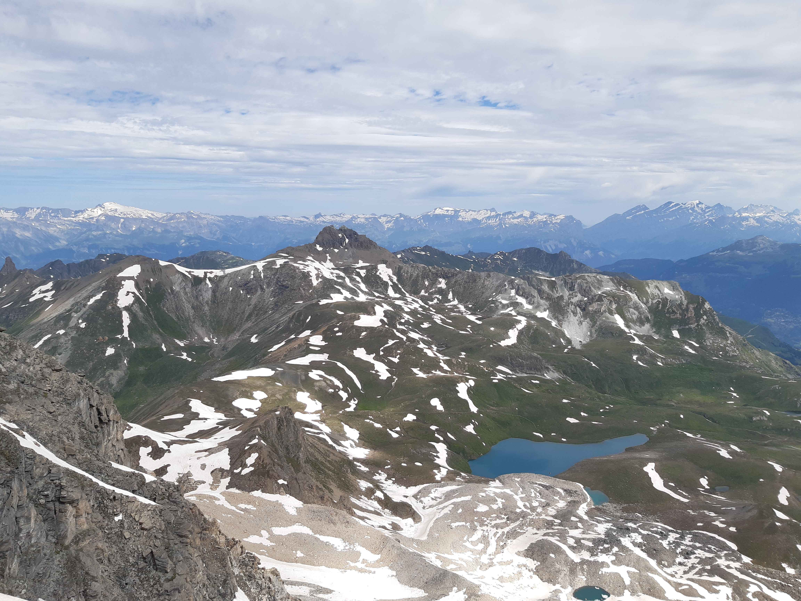 Vue du sommet, côté Nord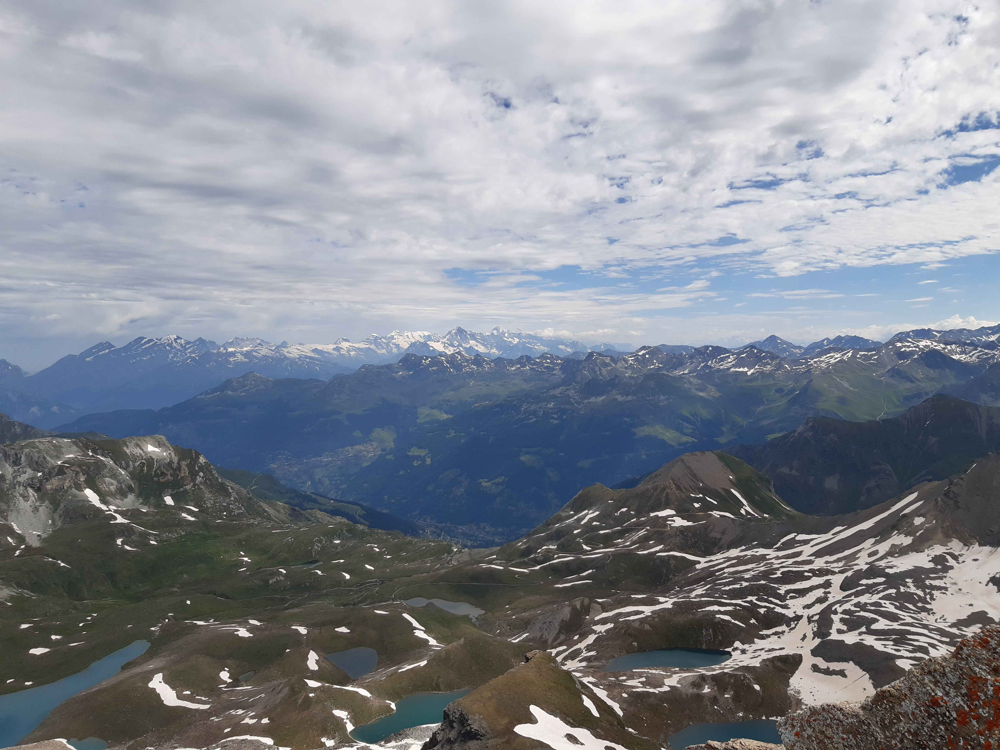 Vue du sommet, côté Est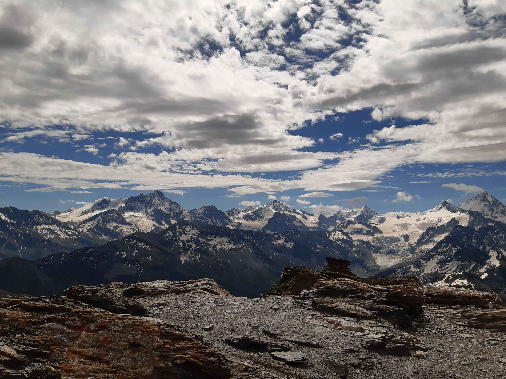 Vue du sommet, côté Sud
De la cabane des becs de Bosson à la cabane de Moiry
Type : aller simple
Description de l'itinéraire : cabane des becs de Bosson - pas de Lona - basset de Lona - alpage de Torrent - Fêta d'Août de Moiry - lac de Châteaupré - Cabane de Moiry
Distance : 17 km
Dénivelé positif : 1000 m
Point le plus bas : 2351 m
Point le plus haut : 2985 m
Cotation en l'absence de neige : T3
Intérêt : 4/5
Date : 23/7/2024
Photos :
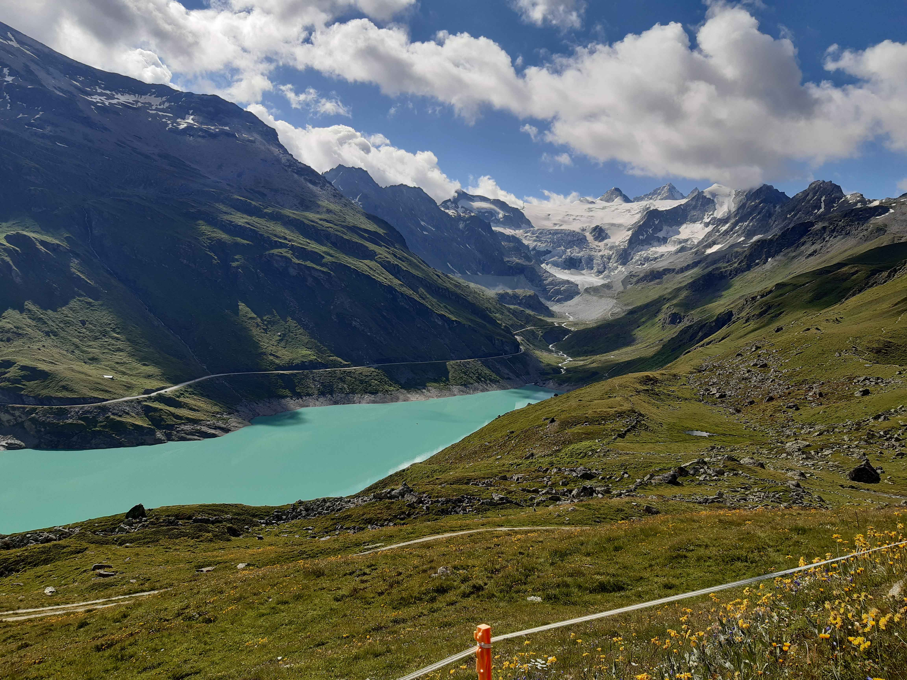 Lac et glacier de Moiry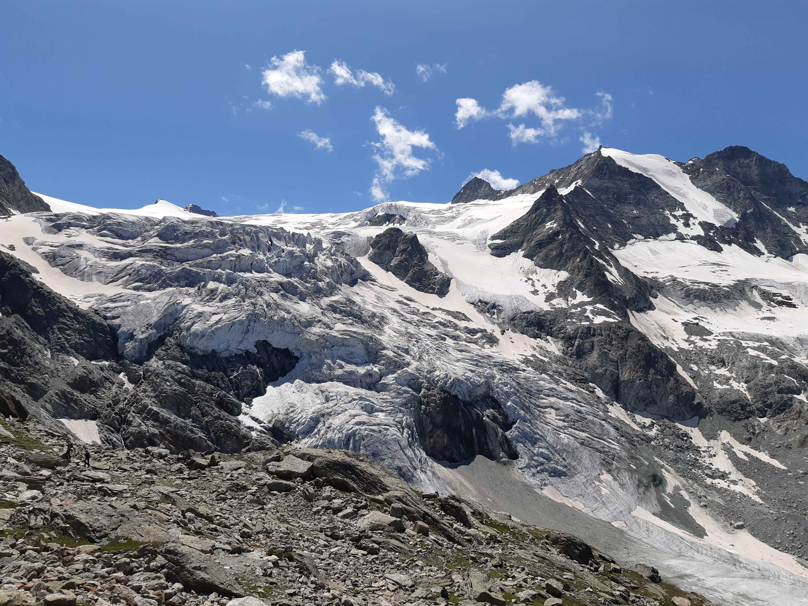 Le glacier de Moiry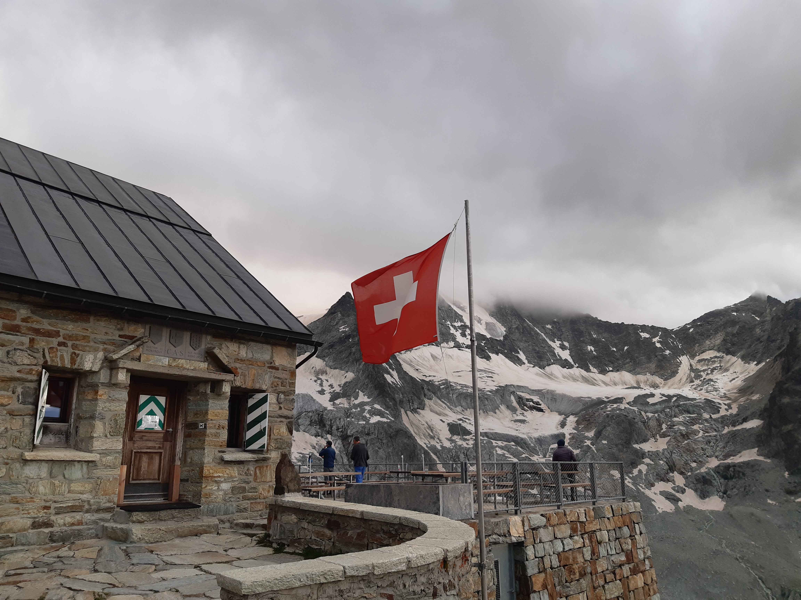 La cabane de Moiry
Cabane de Tracuit
Type : aller simple
Description de l'itinéraire : Zinal - Composana - cabane de Tracuit - petite bosse avec Cairn
Distance : 7 km
Dénivelé positif : 1600 m
Point le plus bas : 1676 m
Point le plus haut : 3269 m
Cotation en l'absence de neige : T4
Intérêt : 4/5
Date : 24/7/2024 (en aller-retour)
Photos :
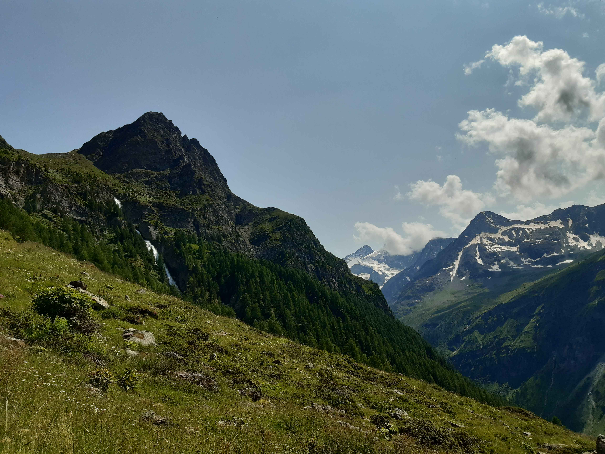 Le roc de la Vache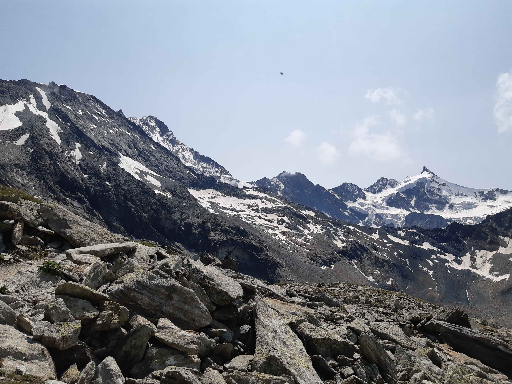 Le Weisshorn et le Zinalrothorn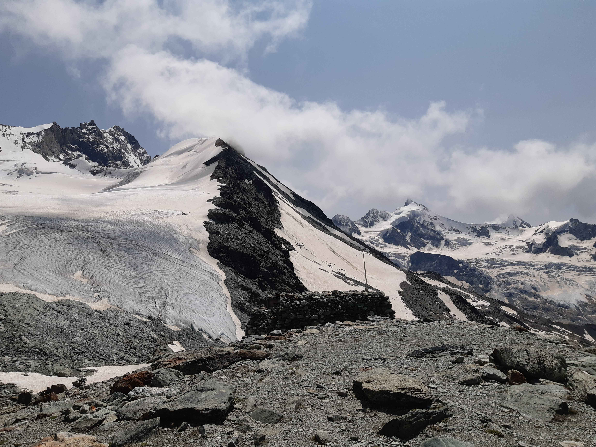 La tête de Milon et le Weisshorn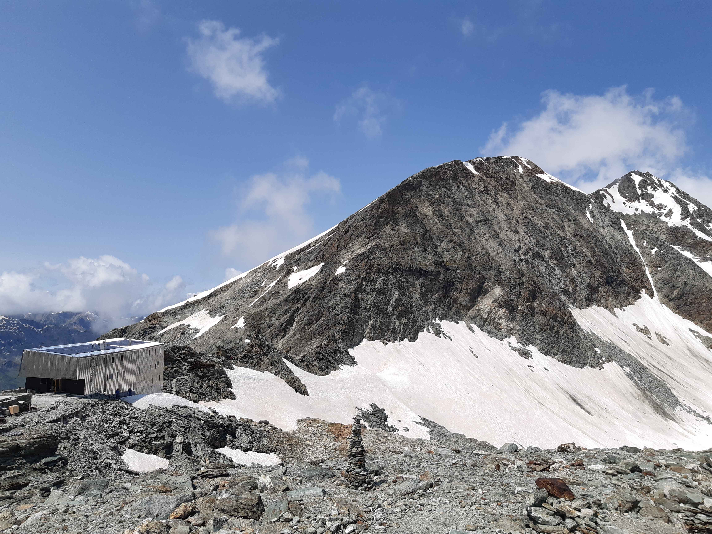 La cabane de Tracuit et les Diablons